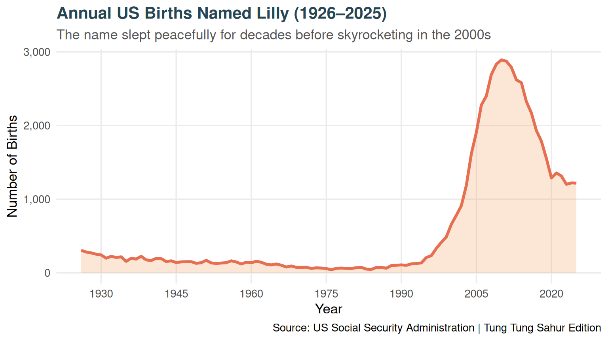

🥁 Tung Tung Sahur: The Rise of Lilly
Waking up to 100 years of baby name trends (1926–2025)
The name Lilly slumbered peacefully in the United States throughout the mid-20th century before experiencing a massive awakening around the year 2000.
Below, Tung Tung Sahur is ready with his kentongan (wooden drum). Click Play so Tung Tung can strike the plot to wake it up!
💥 TUNG!
"Tung, tung, tung, tung... Sahur! The plot is fast asleep. Hit Play and I'll strike the drum to wake it up!"
Year: 1926 | Births: 306
Analysis & Static Reference Plot
The static visualization below was generated using R and ggplot2: